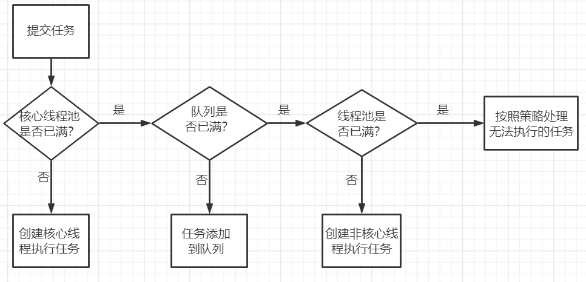

JUC（2-线程池）
为什么要使用线程池？
- 不使用线程池的话，每次请求都会创建新的线程，然后销毁，资源消耗大，复用率低
- 在 Java 中，线程的线程栈所占用的内存在 Java 堆外，不受 Java 程序控制，只受系统资源限制（如若系统资源不足，可能创建失败），默认一个线程的线程栈大小是 1M，如果每个请求都新建线程，1024 个线程就会占用 1 个 G 内存，系统很容易崩溃
- 如若系统庞大，仍每次都在代码中新建线程，不好管理，难以找到错误，也不好监控、调优
- 线程过多会带来调度开销，进而影响缓存局部性和整体性能
优缺点
优点：
- 降低资源消耗：通过重复利用已创建的线程降低和销毁造成的消耗
- 提高响应速度：当任务到达时，任务可以不需要等到线程创建就能立即执行
- 提高线程的可管理性：线程是稀缺资源，如果无限制的创建，不仅会消耗系统资源，还会降低系统的稳定性，使用线程池可以进行统一的分配、调优和监控
缺点：
- 适用于生存周期较短的任务，不适用于又长又大的任务
- 不能对于线程池中任务设置优先级
- 不能标识线程的各个状态，比如：启动线程、终止线程
- 对于任意给定的应用程序域，只能允许一个线程池与之对应
- 线程池所有线程都处于多线程单元中，如果想把线程放到单线程单元中，线程池就废掉了
线程池执行流程
- 如果线程数小于 corePoolSize，创建一个新线程来运行新任务
- 如果线程数等于（或大于）corePoolSize 但少于 maximumPoolSize，则将任务放入队列
- 如果队列已满，并且线程数小于 maxPoolSize，则创建一个新线程
- 如果队列已满，并且线程数大于或等于 maxPoolSize，则拒绝

**线程池调度的核心是 execute()方法 **
1 | // 存放线程池的运行状态 (runState) 和线程池内有效线程的数量 (workerCount) |
线程池参数
1 | public ThreadPoolExecutor(int corePoolSize, |
- corePoolSize（线程池的基本大小）：当提交一个任务到线程池时，如果当前 poolSize < corePoolSize 时，线程池会创建一个线程来执行任务，即使其他空闲的基本线程能够执行新任务也会创建线程，等到需要执行的任务数大于线程池基本大小时就不再创建。如果调用了线程池的 prestartAllCoreThreads()方法，线程池会提前创建并启动所有基本线程
- maximumPoolSize（线程池最大数量）：线程池允许创建的最大线程数。如果队列满了，并且已创建的线程数小于最大线程数，则线程池会再创建新的线程执行任务。值得注意的是，如果使用了无界的任务队列这个参数就没什么效果
- keepAliveTime（线程活动保持时间）：线程池的工作线程空闲后，保持存活的时间。所以，如果任务很多，并且每个任务执行的时间比较短，可以调大时间，提高线程的利用率。如果线程池当前的线程数多于 corePoolSize，那么如果多余的线程空闲时间超过 keepAliveTime，它们就会被终止
- TimeUnit（线程活动保持时间的单位）：可选的单位有天（DAYS）、小时（HOURS）、分钟（MINUTES）等
- workQueue（任务队列）：用于保存等待执行的任务的阻塞队列
- ArrayBlockingQueue：一个基于数组结构的有界阻塞队列，此队列按 FIFO（先进先出）原则对元素进行排序
- LinkedBlockingQueue：一个基于链表结构的阻塞队列，可以设置容量，不设置的话将是一个无边界的阻塞队列，此队列按 FIFO（先进先出）排序元素，吞吐量通常要高于 ArrayBlockQueue
- DelayQueue：延迟队列，是一个任务定时周期的延迟执行的队列，根据指定的执行时间从小到大排序，否则根据插入到队列的先后排序，内部采用的是“堆”的数据结构，可以保证每次出队的任务都是当前队列中执行时间最靠前的。
- SynchronousQueue：同步队列，一个不存储元素的阻塞队列，每个插入操作必须等到另一个线程调用移除操作，否则插入操作一直处于阻塞状态，吞吐量通常要高于 LinkedBlockingQueue
- PriorityBlockingQueue：一个具有优先级的无限阻塞队列
- threadFactory（创建线程的工厂）：默认使用 Executors.defaultThreadFactory()，创建出来的线程都在同一个线程组。如果自己指定 ThreadFactory，那么就可以改变线程名、线程组、优先级、是否是守护线程等
- handler（拒绝策略）：阻塞队列满了之后对新来线程的拒绝策略
- ThreadPoolExecutor.AbortPolicy（默认拒绝策略）：丢弃任务并抛出 RejectPoolExecutorException 异常
- ThreadPoolExecutor.DiscardPolicy：丢弃新来的任务，但是不抛出异常
- ThreadPoolExecutor.DiscardOldestPolicy：丢弃队列头部（最旧的）的任务，然后重新尝试执行程序（如果再次失败，重复此过程）
- ThreadPoolExecutor.CallerRunsPolicy：调用执行自己的线程运行任务，即直接在调用 execute 方法的线程中运行（run）被拒绝的任务，如果执行程序已关闭，则会丢弃该任务
使用场景
- ArrayBlockingQueue 和 LinkedBlockingQueue 常用于典型的生产者-消费者场景。例如：任务处理系统中，生产者生成任务，消费者从队列中取出任务并执行。
- PriorityBlockingQueue 更适合处理带有优先级的任务场景，如任务调度系统。
- DelayQueue 适用于需要延迟处理的任务，例如：缓存失效策略、定时任务调度等
- SynchronousQueue 适合在线程间直接传递数据，而不希望数据被存储在队列中。例如：ThreadPoolExecutor 的直接交接模式中使用 SynchronousQueue 来传递任务。
CallerRunsPolicy 拒绝策略有什么风险？如何解决？
1 | public class ThreadPoolTest { |
因为 CallerRunsPolicy 这个拒绝策略，导致耗时的任务用了主线程执行，导致线程池阻塞，进而导致后续任务无法及时执行，严重的情况下很可能导致 OOM。
newFixedThreadPool
-
缺点：容易造成大量内存占用，可能会导致 OOM
-
特点：
-
线程数固定可重用，corePoolSize 和 maximunPoolSize 设定值相等
-
keepAliveTime 为 0，一旦有多余的空闲线程，就会被立即停止掉
-
阻塞队列采用了 LinkedBlockingQueue，他是一个无界队列，因此永远不可以拒绝任务，超出的任务都需在队列中等待
1 | public static ExecutorService newFixedThreadPool(int nThreads) { |
1 | public class FixedThreadPoolTest { |
newSingleThreadExecutor
-
作用：创建一个使用单个 worker 线程的 Executor，以无界队列（LinkedBlockingQueue）方式来运行该线程，超过的任务都将存储在队列中，等待执行。
-
适用场景：适用于需要保证顺序执行各个任务，并且在任意时间点，不会同时有多个线程的场景
-
缺点：当请求堆积的时候，可能会占用大量的内存
-
特点：线程池中最多执行 1 个线程，之后提交的线程活动将会排在队列中依次执行
1 | public static ExecutorService newSingleThreadExecutor() { |
1 | public class SingleThreadExecutor { |
newCachedThreadPool
-
作用：创建一个可缓存线程池，此线程池不会对线程池大小做限制，线程池大小完全依赖于操作系统（或者说 JVM）能够创建的最大线程大小。如果线程池长度超过处理需要，缓存一段时间后会回收，若无可回收，则新建线程
-
适用场景：适用于创建一个可无限扩大的线程池，执行时间较短、任务多的场景
-
特点：
- 线程池中数量不固定，可以达到（Integer.MAX_VALUE）
- 线程池中的线程可进行缓存重复利用和回收（回收默认时间为 1 分钟，即 1 分钟内没有任务的线程）
1 | public static ExecutorService newCachedThreadPool() { |
1 | public class CachedThreadPool { |
newScheduledThreadPool
-
作用：创建一个 corePoolSize 为传入参数，最大线程数为（Integer.MAX_VALUE）的线程池，此线程池支持定时以及周期性执行任务的需求
-
适用场景：适用于需要多个后台线程执行周期任务的场景
1 | public static ScheduledExecutorService newScheduledThreadPool( |
1 | public class ScheduledThreadPoolTest { |
总结
- FixedThreadPool 和 SingleThreadExecutor 的 Queue 是 LinkedBlockingQueue
- CachedThreadPool 使用的 Queue 是 SynchronousQueue
- ScheduledThreadPool 使用延迟队列 DelayWorkQueue
注意：创建线程池推荐使用 ThreadPoolExecutor 及其 7 个参数手动创建
execute 和 submit 的区别
- 参数不同：execute 只能接收 Runnable 参数；submit 能接收 Runnable、Callable 参数
- 返回值不同：execute()方法用于提交不需要返回值的任务，所以无法判断任务是否被线程池执行成功与否；submit()方法用于提交需要返回值的任务，线程池会返回一个 Future 类型的对象，通过这个 Future 对象可以判断任务是否执行成功，并且可以通过 Future 的 get()方法来获取返回值，get()方法会阻塞当前线程直到任务完成，而使用 get(long timeout, TimeUnit unit)方法则会阻塞当前线程一段时间后立即返回，这时候有可能任务没有执行完
- 异常处理不同：execute 中的是 Runnable 接口的实现，execute 中出现的异常会被直接抛出来，或者只能在 run 方法中捕获；submit 中出现的异常可以在 call 方法中捕获处理，也可以在外部处理。如果希望外面的调用者感知这些 exception 并做出及时的处理，那么就需要用到 submit，通过捕获 Future.get 抛出的异常；如果不调用 Future.get 方法，即使有错误异常，也不会抛出
线程池的线程数量设定
- CPU 密集型（加密、计算 hash 等）：最佳线程数为 CPU+1
指的是系统的硬盘、内存性能相对 CPU 要好很多，此时系统运作大部分的状况是 CPU Loading 100%，CPU 要读/写 IO（硬盘内存），I/O 在很短的时间就可以完成
比 CPU 核心数多出来的一个线程是为了防止线程偶发的缺页中断，或者其它原因导致的任务暂停而带来的影响。一旦任务暂停，CPU 就会处于空闲状态，而在这种情况下多出来的一个线程就可以充分利用 CPU 的空闲时间。
- IO 密集型（读写数据库、文件、网络读写等）：最佳线程数为 2*CPU
指的是系统的 CPU 性能相对硬盘、内存要好很多，此时系统运作大部分的状况是 CPU 在等 I/O（硬盘/内存）的读/写操作，而线程在处理 I/O 的时间段内不会占用 CPU 来处理，这时就可以将 CPU 交出给其它线程使用。
停止线程池的方法
- shutdown：调用方法后，不是立即关闭线程池，而是在线程池中执行任务，或者等待队列中执行任务，等待所有任务完成后关闭线程池
- isShutdown：判断线程池是否开始关闭，无法判断是否完全关闭
- isTerminated：可以判断线程池是否完全关闭
- awaitTermination：判断线程池是否完全关闭，但接受等待时间
- shutdownNow：立即关闭线程池
线程池状态
| 状态 | 含义 |
|---|---|
| RUNNING | 接受新任务并处理排队任务 |
| SHUTDOWN | 不接受新任务，但处理排队任务 |
| STOP | 不接受新任务，也不处理排队任务，并中断正在进行的任务 |
| TIDYING | 所有任务都已终止，workerCount 为 0 时，线程会转换到 TIDYING 状态，并将运行 terminate()钩子方法 |
| TERMINATED | terminate()运行完成 |